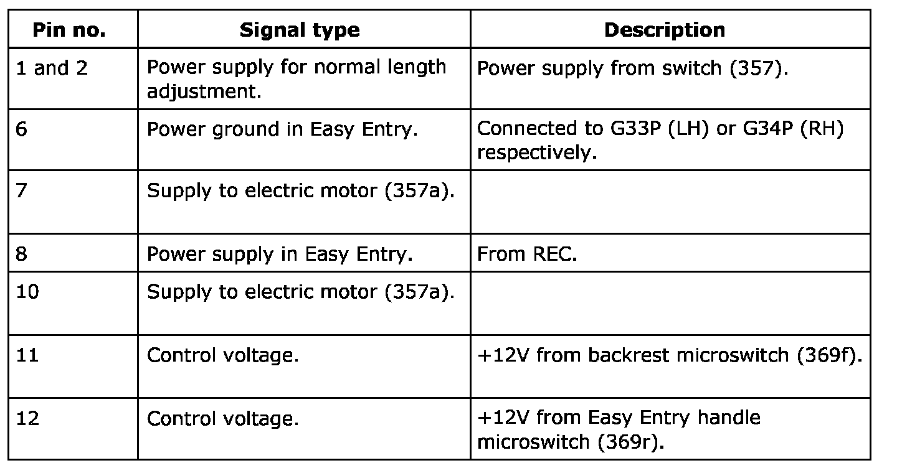
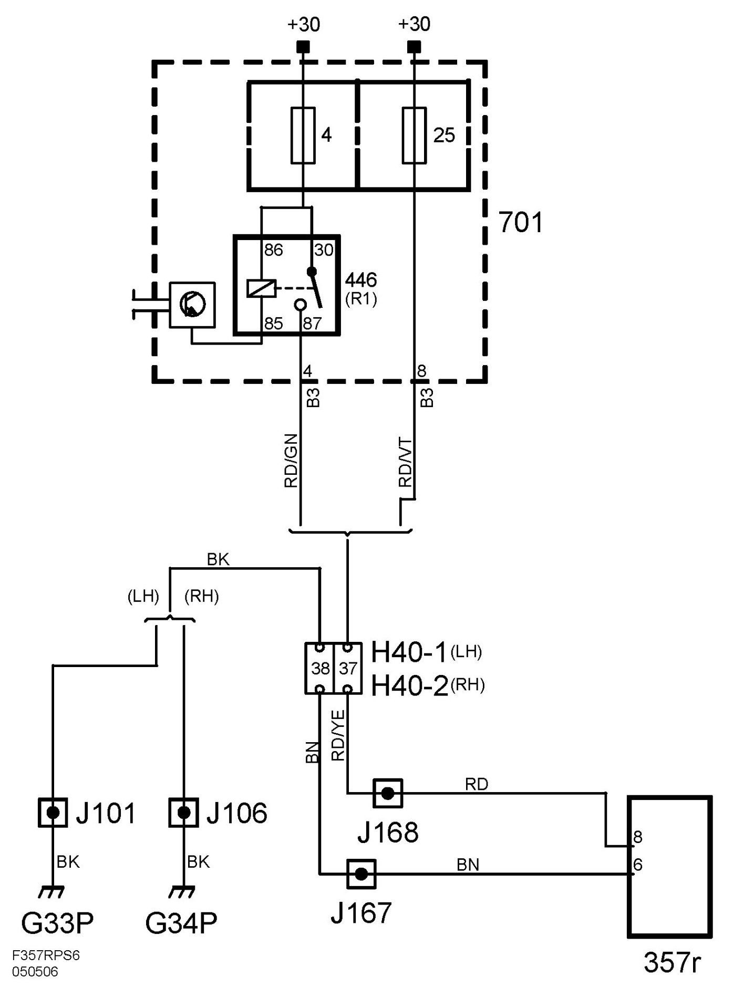

Relay Unit, Seat (357r)
Relay Unit, Seat (357r)
Location
In the seat.
Main task
To control the length adjustment motor (357a) in Easy Entry mode.
Type
Relay unit.
Connect

If the passenger seat is the manual variant, the relay unit will be powered from fuse 4 via relay 446. Otherwise, the relay unit is powered from fuse 25.

Function
For moving the seat lengthways, power is supplied to the electric motor from control switch (357) via one pair of relay contacts in the relay unit to the electric motor. When one of the microswitches for the Easy Entry function is activated, a number of relays inside the unit will be activated, whereby the seat will move to its end position or for as long as the handle is activated.